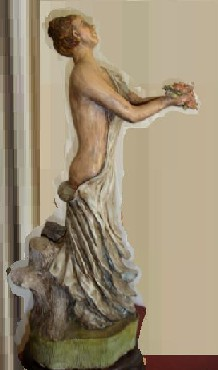

Juguete.
| Autor: Graciela María Casartelli |
Mi tiempo de cosas lindas...
Cuánto disfrutaba lo que tu nombre solía brindarme
| en caprichos de niña. |
Conocías mis enredos,
| mis sombras, |
| mi enagua, |
| y el pan entre mis dientes. |
No te extraño.
Formaste parte de un sueño amado,
| aunque, ya no te amo... |
Capricho de niña, juguete de nieve.
En el final te hiciste agua, ante el fuego vivo,
| luego vapor, luego nada... |
Quisiera un juguete quemado,
| por mis manos infantiles y locas. |
Quisiera un juguete quemado,
| pero no, de nieve... |
Hubiera deseado recordarte con una sonrisa,
como parte de aquello, que compartimos
| y dejamos ir, juntos... |
Cuando deseo prolongar la imagen de tu hora,
libre te esfumas, helado y triste,
llovizna sin forma,
al espacio abierto, a lo que perdí... |
Tu profunda cicatriz está impregnada
en mi lágrima triste,
| en mi rechazo de ti. |
Tú sembraste mi muerte,
| aunque tal vez, no querías hacerlo. |
Y yo te fui envolviendo en ella,
| hasta la revancha. |
En esta cima, al pie del comienzo
contemplo cuesta abajo y te busco:
¿Dónde te arrojé, juguete
de nieve...?
Donde no te reintegrarás nunca.
En el umbral, pensativa y cabizbaja,
|
 Escultura de Rosita Acosta de Díaz de Vivar (Paraguay) |
Mi templo de fuego, hace mucho,
| me extendió los brazos. |
Antes que conociera el cielo,
me arrastró por el desvío,
| en el sendero de los abismos. |
Mi grito al infinito pide socorro,
| a un monte y a un siglo. |
A un madero erguido y en él,
| a otro muerto... |
Mi grito al infinito llama a todos aquéllos,
| que me acompañaron un trecho. |
A mi madre.
A unos cuantos rostros,
| mujeres y hombres, ¡que hoy los vuelven!. |
¡Dios!: ¡Sólo veo espaldas!
Espaldas humedecidas,
| escalonadas, oscuras. |
. . .
Una rosa lejana, aún me da su perfume.
| Y en lágrimas, yo me embriago. |
Mi rosa pequeña:
| ¡Tú irás por el camino alto!. |
| ¡Tú besarás las cúspides!. |
En sólo una ilusión, purificarás una perla,
de mi collar amargo...
|
. . .
Mi tiempo de cosas lindas...
Cuánto disfrutaba lo que tu nombre solía brindarme
| en caprichos de niña... |
. . .
Reservados todos los derechos.